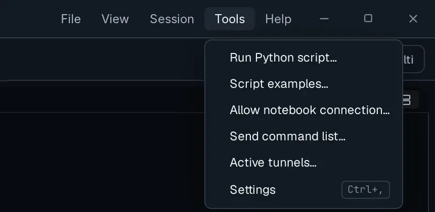
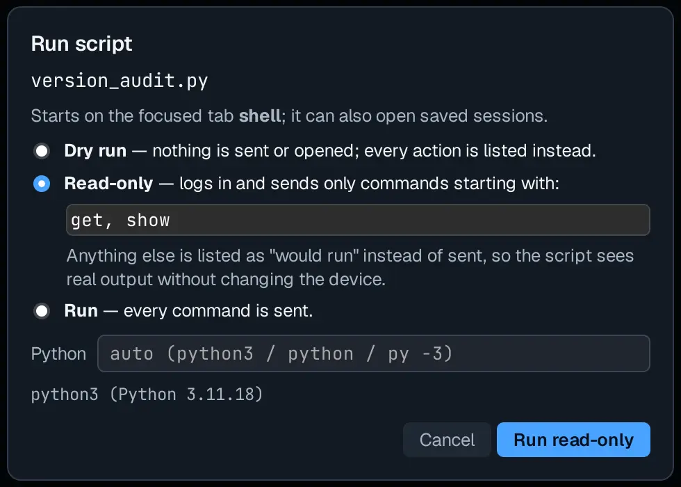
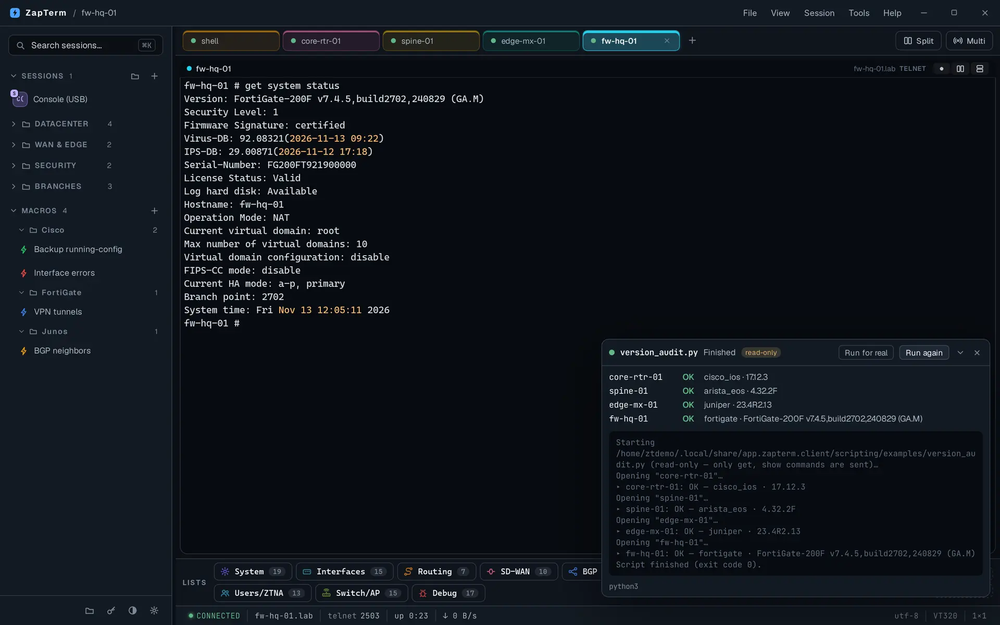
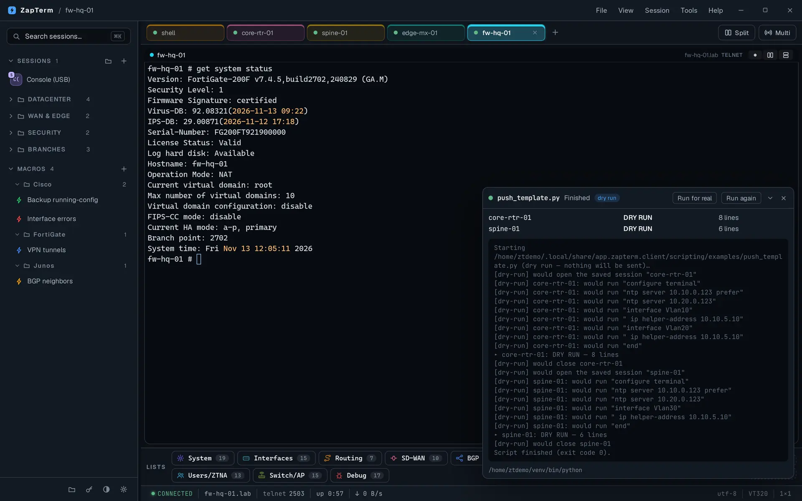
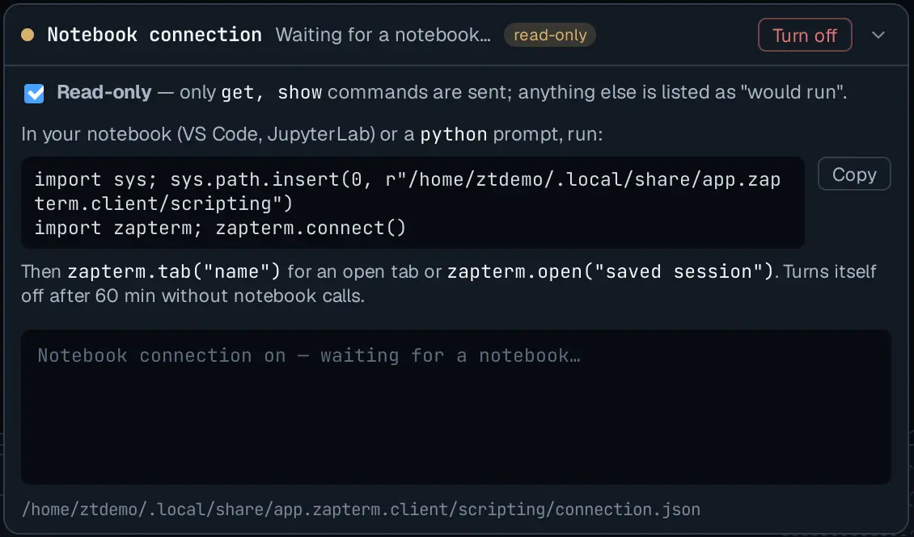
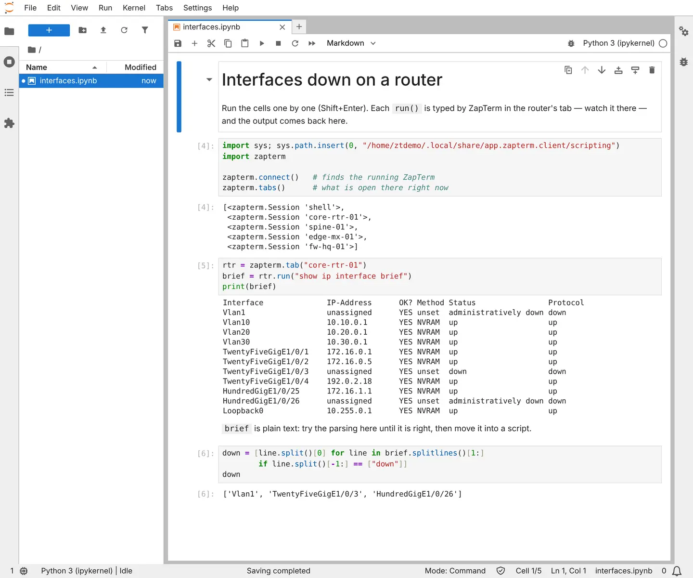
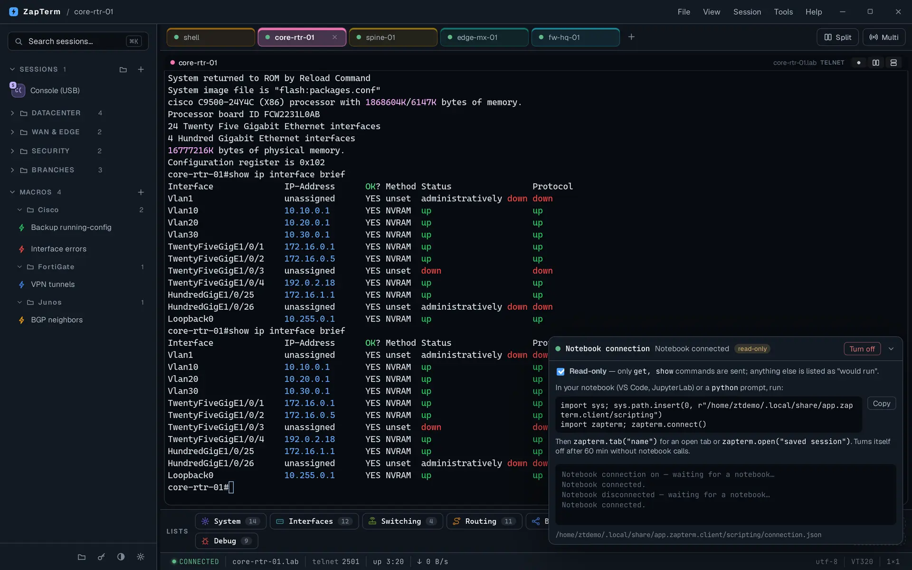

Automation
Python drives the devices.
You watch every command.
ZapTerm runs your Python scripts and notebooks against the sessions you already have. Every command is typed in a real terminal tab, through the same jump hosts, vault passwords and login scripts as when you connect by hand — so nothing happens out of sight.
How it works
out = sw.run("show version")decides what to doa real tab you can seeconnects, types, reads the outputCisco · Arista · Junos · FortiGate…SSH, Telnet or serialThe script decides, ZapTerm does
Your code never opens a connection itself. It asks ZapTerm to run a command and gets the text back; you see it happen in the tab and can take over at any moment.
Connections stay ZapTerm's job
A script opens saved sessions by name. Jump hosts, vault passwords, login scripts and host keys are handled as for any session you open yourself.
Passwords never reach your code
send_secret("Name.Password") asks ZapTerm to
type a vault credential into the session. The script can't read it.
What you need: Python 3.9 or newer on the same computer. ZapTerm puts its
zapterm module on the path when it runs your script, so nothing else is required — and you can
use any library you have installed, such as Jinja2, pandas or ncclient.
Run a script in three steps of trust
Tools → Run Python script… picks a .py file; Tools → Script examples… opens
the folder with the examples that come with ZapTerm.


Nothing is sent or opened. Every action is listed as "would open…", "would run…", so you see exactly what the script would type on each device.
Sessions are opened and commands starting with get or
show (you can change the list) run for real; anything else is skipped and logged. The script works
on real output without changing a device.
Every command is sent. After a dry or read-only run the panel offers Run for real, with the same script.
ZapTerm enforces the mode, not the script: in Dry run and Read-only, a command the mode doesn't allow never reaches the device, whatever the code does. The Python field picks the interpreter, for example a virtual environment with your own libraries.
Example: software versions across vendors
Four saved sessions, four vendors. ZapTerm detects each device's platform, so the script
picks the right command and pattern for it and adds a row to the summary table with report().
"""Software version of every device in a list, whatever the vendor.
Run it from Tools -> Run Python script... in Read-only mode: it only sends
`show` / `get` commands, so a real run changes nothing either.
"""
import re
import zapterm
DEVICES = ["core-rtr-01", "spine-01", "edge-mx-01", "fw-hq-01"] # saved sessions
CLOSE_TABS = False # keep each device's tab open to look at it afterwards
# Which command shows the version, and how to find it, per detected platform.
VERSION = {
"cisco_ios": ("show version", r"Version ([\w.()]+)"),
"arista_eos": ("show version", r"Software image version: (\S+)"),
"juniper": ("show version", r"Junos: (\S+)"),
"fortigate": ("get system status", r"Version: (.+)"),
}
for name in DEVICES:
try:
s = zapterm.open(name)
command, pattern = VERSION.get(s.platform, ("show version", r"[Vv]ersion:? (\S+)"))
out = s.run(command)
found = re.search(pattern, out)
if zapterm.dry_run:
zapterm.report(name, "DRY RUN", f"would run: {command}")
elif found:
zapterm.report(name, "OK", f"{s.platform or 'unknown'} · {found.group(1).strip()}")
else:
zapterm.report(name, "NO VERSION", f"nothing matched in `{command}`")
if CLOSE_TABS:
s.close()
except zapterm.Error as e: # a device that fails doesn't stop the others
zapterm.report(name, "FAILED", str(e))
Example: a Jinja2 template on a set of devices
One row per device in a CSV file, one template, rendered per device and typed line by line.
Jinja2 isn't part of ZapTerm: install it in the Python you run the script with (pip install jinja2).
ntp.j2
configure terminal
ntp server {{ ntp_primary }} prefer
ntp server {{ ntp_secondary }}
{% for vlan in vlans.split() -%}
interface Vlan{{ vlan }}
ip helper-address {{ dhcp_relay }}
{% endfor -%}
enddevices.csv
device,ntp_primary,ntp_secondary,dhcp_relay,vlans
core-rtr-01,10.10.0.123,10.20.0.123,10.10.5.10,10 20
spine-01,10.10.0.123,10.20.0.123,10.10.5.10,30push_template.py
"""Render a Jinja2 template per device from a CSV file and send it.
devices.csv has one row per device (the `device` column is the saved
session's name) and one column per template variable. ntp.j2 is the template.
Needs Jinja2 in the Python ZapTerm uses: pip install jinja2
Always start with Dry run: it lists, per device, exactly what would be typed.
"""
import csv
from pathlib import Path
from jinja2 import Environment, FileSystemLoader, StrictUndefined
import zapterm
HERE = Path(__file__).parent
env = Environment(loader=FileSystemLoader(HERE), undefined=StrictUndefined)
template = env.get_template("ntp.j2")
with open(HERE / "devices.csv", newline="") as f:
rows = list(csv.DictReader(f))
if not zapterm.confirm(f"Send ntp.j2 to {len(rows)} device(s)?"):
raise SystemExit("Cancelled.")
for row in rows:
name = row["device"]
lines = [l for l in template.render(**row).splitlines() if l.strip()]
try:
s = zapterm.open(name)
for line in lines:
out = s.run(line)
if out.lstrip().startswith("%"): # Cisco-style error
raise zapterm.Error(f"{line!r}: {out.strip()}")
zapterm.report(name, "DRY RUN" if zapterm.dry_run else "OK", f"{len(lines)} lines")
s.close()
except zapterm.Error as e:
zapterm.report(name, "FAILED", str(e))
A device that answers a line with a Cisco-style error (output starting with %) stops there and is reported as FAILED; the others carry on.
Check the rendered lines in Dry run, the device state in Read-only, then send it.
Notebooks: explore first, script later
A script runs top to bottom. While you write one you want the opposite: run one command,
look at what the device really prints, write the parsing against it, try again. A Jupyter notebook in
JupyterLab or VS Code does that, driving ZapTerm's tabs with the same zapterm module.
- Tools → Allow notebook connection… The panel shows the two lines a notebook needs; Copy puts them on the clipboard. It is local to your computer, off by default, and turns itself off after 60 minutes without notebook calls.
- In the notebook,
import zaptermandzapterm.connect(). Thenzapterm.tab("name")for an open tab orzapterm.open("saved session"). - Run cells. Each
run()is typed in the tab and its output comes back to the cell. Variables stay between cells, so you re-run only the parsing you are fixing.



A notebook starts read-only: only get and show reach the device.
Untick Read-only in the panel only when you mean to change something — bigger changes belong in a script you've
dry-run. When the cells work, copy them into a .py file, loop over zapterm.sessions(folder)
and add report() lines.
The zapterm module at a glance
| Call | What it does |
|---|---|
zapterm.session() | The tab that was focused when the script started. |
zapterm.open(name) | Open a saved session in a new tab and wait until it is connected. |
zapterm.tab(name) / tabs() | A tab already open, by name / all open tabs. |
zapterm.sessions(folder) | Names of the saved sessions, or only those in a folder and its sub-folders. |
s.run(cmd, timeout=30) | Type a command, wait for the prompt, return the output. |
s.send(text) / s.expect(pattern) | Type without waiting / wait for a text or regex to appear. |
s.send_secret("Name.Password") | Type a vault credential; the script never sees it. |
s.poll(cmd, until, every, max) | Repeat a command until a condition holds or time runs out. |
s.platform / s.close() | Detected platform ("cisco_ios", "fortigate"…) / close the tab. |
zapterm.report(target, status, detail) | Add a row to the summary table. |
zapterm.confirm(msg) / log(…) / sleep(s) | Ask yes/no in ZapTerm / write to the panel / wait (skipped in Dry run). |
zapterm.dry_run / read_only | True when the script runs in that mode. |
zapterm.connect() | From a notebook or a Python prompt: connect to the running ZapTerm. |